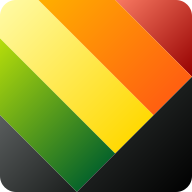

Organizing Committee
- General Chairs
- Wei Chen
Zhejiang University
- Günter Wallner
Johannes Kepler University Linz
- Andreas Kerren
Linköping University
- Program Chairs
- Michael Burch
University of Applied Sciences of the Grisons
- Kuno Kurzhals
University of Stuttgart
- Yuxin Ma
Southern University of Science and Technology
- Art Paper Chairs
- Claire QI
China Academy of Art
- Lingyun Yu
Xi’an Jiaotong-Liverpool University
- Jürgen Hagler
University of Applied Sciences Upper Austria
- Art Gallery Chairs
- James She
Hong Kong University of Science and Technology (Guangzhou)
- Tongzhou Yu
China Academy of Art
- Hyunjung Kim
The University of Tokyo
- Media Gallery Chairs
- Zi-Wi WU
Hong Kong University of Science and Technology
- Seungwoo Je
Southern University of Science and Technology
- Yin BING
Chinese Academy of Art
- Special Track on Cultural Computing Chairs
- Xiaojiao Chen
Zhejiang University
- Wei Zeng
Hong Kong University of Science and Technology (Guangzhou)
- Publication Chairs
- Chaoyan Ming
Hangzhou City University
- Lechao Cheng
Hefei University of Technology